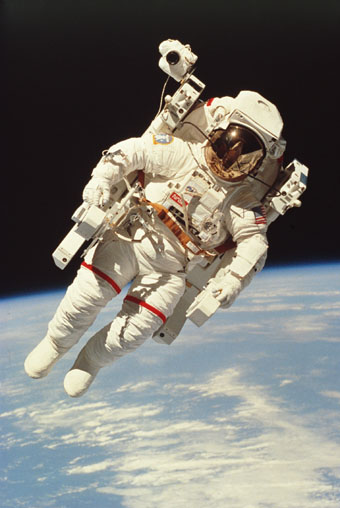

An Astronaut
Person trained to pilot a spacecraft, operate any of its systems, or conduct research aboard it during spaceflights.
The term commonly refers to those participating in U.S. space missions; cosmonaut is the Russian equivalent, and taikonaut is the Chinese equivalent. Astronauts undergo an intense training program that includes classes on spacecraft systems, guidance and navigation, and orbital dynamics, as well as training in land and sea survival, space suits, and weightlessness. With longer stays in space on board the International Space Station, training emphasizes general spaceflight and problem-solving skills, rather than the specific tasks to be accomplished, as in preparation for shorter missions. Example fo Astronaut is Edwin Eugene Aldrin, Jr.; Neil Armstrong; Guion S. Bluford, Jr.; Yury Gagarin; John H. Glenn, Jr.; Mae Jemison; Sergey Konstantinovich Krikalyov; Shannon Wells Lucid; Valery Vladimirovich Polyakov; Sally Ride; Alan B. Shepard, Jr.; Valentina Tereshkova.